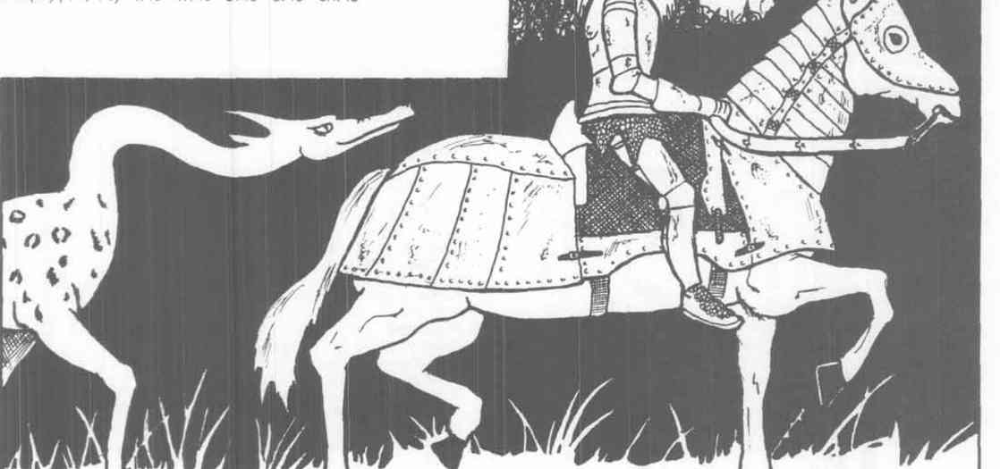

人物的传奇关系可作为战役钩子直接使用。
Sir Lamorak 与 Merlin
Sir Lamorak 是 King Pellinore 之子，也是 Margawse 王后的情人；他曾在比武和战场上连续击杀圆桌成员，最著名的战绩是独自杀死十二名叛变骑士。AC −2，99 点生命值，15 级战士，中立；力量 18／100，敏捷 18，体质 18，魅力 17。他最大的敌人是 Sir Gawain 及其兄弟。
Merlin 是女巫与变形魅魔所生，兼具远超凡人的德鲁伊、魔法师和幻术师能力。AC 2（来自护腕），175 点生命值，中立善良；14 级德鲁伊、15 级魔法师、10 级幻术师，心灵能力值 300。他几乎从不穿甲或使用普通武器，却拥有预言、传讯、变形和大量法术能力，是亚瑟王时代最危险也最可靠的顾问。
Sir Palomides 与 King Pellinore
Sir Palomides the Saracen 是 Sir Tristram 的苦战宿敌，因弯刀的迅速与战场勇气闻名，也擅长使用骑士通常不用的复合弓。AC 2，93 点生命值，16 级战士兼 3 级僧侣／吟游诗人，中立；力量 17，敏捷 18，魅力 18。
King Pellinore 是“追寻野兽”的骑士，守序中立，AC −2，65 点生命值，12 级战士。他在亚瑟王朝已过中年，仍是强健的战士；他的家族世代追猎神秘而独一无二的 Questing Beast，却注定永远无法真正捕获它。

Sir Tristram of Lyonesse
Sir Tristram 以武艺与战场上的残酷著称，许多人认为他的剑术仅次于 Lancelot。AC −3，120 点生命值，17 级战士，中立；力量 18／99，敏捷 19。他与美丽的 Lady Isole 有一段注定悲剧的爱情，而 Isole 已嫁给邪恶、多疑的 King Mark；Mark 不断寻找机会羞辱或毁灭 Tristram。